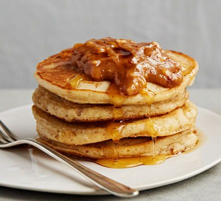

Peanut Butter Pancakes

Description
Try pancakes with a sweet, crunchy peanut butter sauce - perfect for
Pancake Day, a weekend brunch or even dessert.
Ingredient
- 250g crunchy peanut butter
- 50g unsalted butter , cubed, plus extra for cooking
- 6 tbsp maple syrup
- 300g self-raising flour
- 1 tsp baking powder
- 1 tbsp golden caster sugar
- 2 large eggs
- 350ml milk
- sunflower oil , for cooking
- fruit , to serve (optional)
Steps
-
Heat the peanut butter, butter and 4 tbsp maple syrup in the microwave,
or a pan, for 2 mins, stirring every 30 seconds until smooth and
combined. Set aside to cool slightly.
-
Mix the flour, baking powder and sugar in a large bowl with a small
pinch of salt. Crack in the eggs and whisk until smooth. Add the milk
and ¾ of the peanut butter mixture and whisk to combine.
-
Heat a splash of sunflower oil and a small knob of butter in a non-stick
frying pan until foaming. Add 2 tbsp of batter to make small pancakes,
making sure there's space between each. Cook until bubbles start to form
on the surface, then flip and cook on the other side. Keep warm in a low
oven whilst you make the next batch.
-
Serve the pancakes with the remaining peanut butter sauce, maple syrup
and fruit, if using. You may have to reheat the sauce to loosen the
mixture slightly.
Return to main page